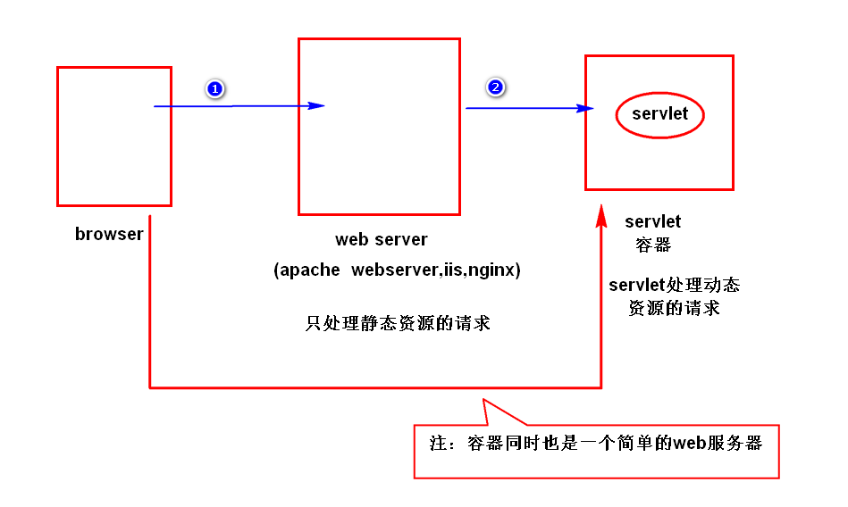
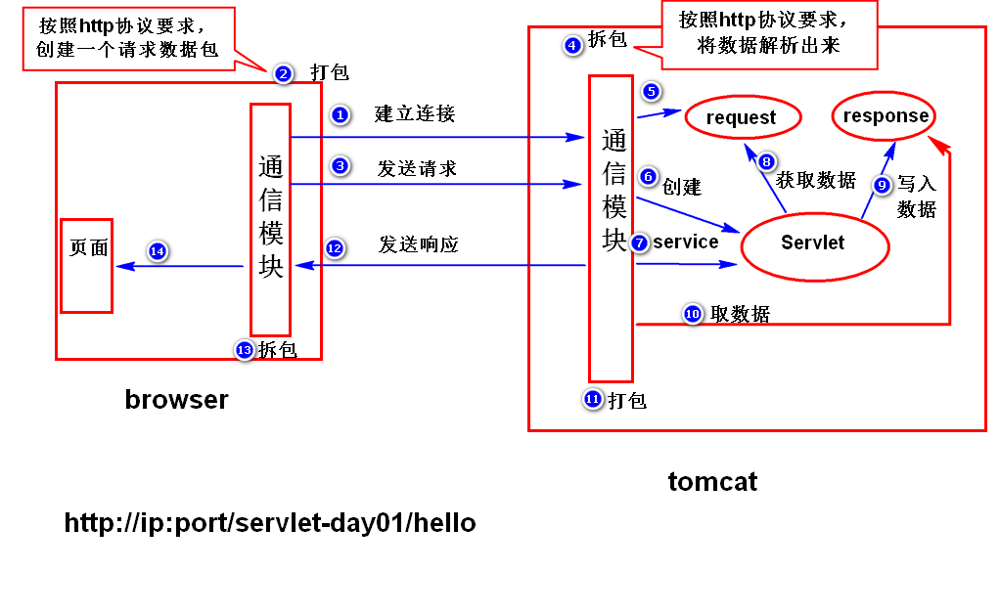

servlet慨念
1. Servlet： server let 服务器端小程序[或称小服务程序]
*servlet用来扩展web服务器功能的组件规范。
*web服务器是无法处理动态数据，他们只能通过扩展功能来实现，而这些东西就用到servlet，以前用是CGI(common Gateway Interface)[通用网关接口]
*但CGI开发复杂，性能比较差，移植性不好。已不常见
servlet目录结构
WEB-INF[要大写] 下面有这些目录或文件:
-classes[放编译的字节码文件]
-lib[可有，放扩展的jar文件]
-web.xml[描述文件]
servlet与web服务器关系
servlet是如何运行的?
[比如，打开浏览器，输入http://ip:port/servlet-day01/hello]
[步骤]
1.浏览器输入http://ip:port/servlet-day01/hello提交请求
2.浏览器将数据打包,并依据ip,port建立与web服务器建立连接，连接成功后发送数据包
[注：servlet容器同时也是一个简单的web服务器]
3.web服务器接收后拆包（即按照http协议要求，将请求数据包中的相关数据解析出来），然后将解析到的数据添加到request对象里面，同时，创建一个response对象。
4.web服务器创建servlet对象，然后调用该对象service方法来处理请求.
[注：在service方法里面，可以通过request对象获取请求数据包里面的数据，同时，可以将处理结果写到response对象里面]
5.web服务器会将response对象中的数据取出来，打包（即按照http协议创建响应数据包），然后发送给浏览器。
6.浏览器拆包（按照http协议要求，将响应数据包中的数据解析出来），然后生成相应的页面。
请求匹配
1.精准匹配
2.模糊匹配[很少用]
3.后缀匹配 使用[*.]开头，后接任何的字符,比如:<url-pattern>*.do<url-pattern>
合并请求:用后缀匹配实现，
String uri=request.getRequestURI();//获取请求地址
System.out.println(uri);
String action=uri.substring(uri.lastIndexOf("/"), uri.lastIndexOf("."));
if(action.equals("/findName")){
// 是/findName.的执行该代码
}